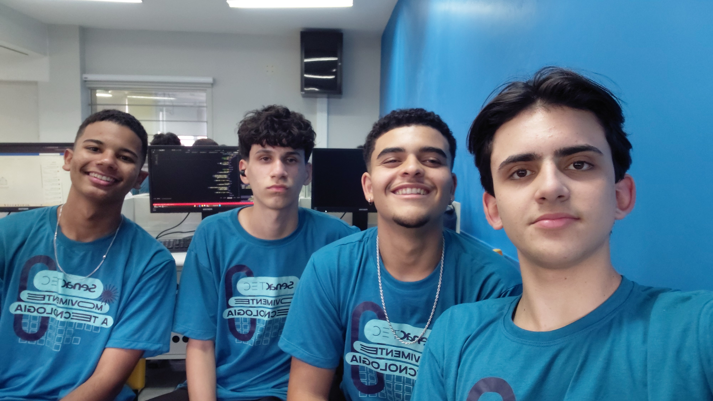

Sobre nós

Nossa História
O Itajubá Sem Filtro foi criado como um trabalho do movimento SenacTEC em nossa cidade, no curso inicial de Programador Web. O site nasceu no laboratório de informática do Senac, com o desejo de transformar nossa cidade. Nós - Hugo, João Filipe, Miguel e Murilo - percebemos que com a tecnologia tínhamos a ferramenta necessária para tentar resolver os problemas do nosso município. Sentimos que Itajubá precisava de um local para os cidadãos expressarem suas indignações com a cidade, seja com problemas de infraestrutura, serviços públicos ou situações do cotidiano. Nosso site foi desenvolvido levando em conta as preocupações da população da nossa cidade. Aqui, as pessoas têm a oportunidade de expressar suas reclamações e publicá-las em nossa página, sempre com respeito e educação, respeitando os princípios fundamentais da convivência.
Como o site funciona?
- O cidadão posta a reclamação
- A comunidade engaja com as curtidas
- O dado fica público para que as autoridades ou responsáveis vejam
Agradecimentos
A realização do Itajubá Sem Filtro não teria sido possível sem o apoio de pessoas e instituições
que acreditam no poder da educação e da tecnologia como agentes de mudança social.
O nosso sincero obrigado ao Senac, por nos proporcionar um ambiente de aprendizagem dinâmico e inovador.
Através do movimento SenacTEC, tivemos a oportunidade de sair da teoria e enfrentar desafios reais
com nosso projeto.
Ao nosso professor João Paulo, que exerceu com excelência sua atividade como docente,
o nosso reconhecimento pelo conhecimento partilhado, incentivo e paciência.